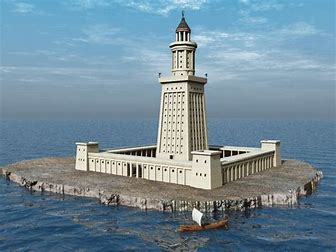
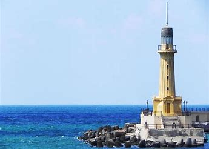
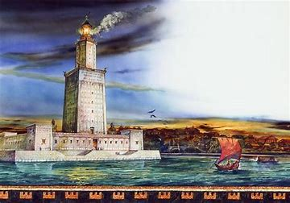
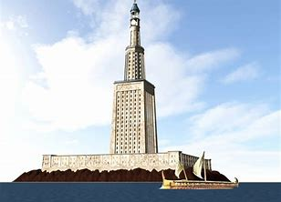
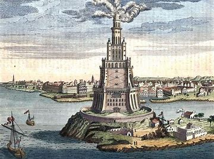
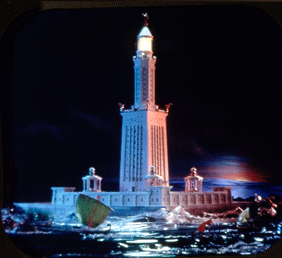
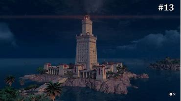
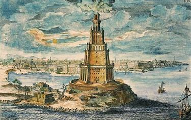
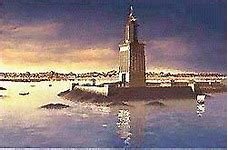

The Lighthouse Of Alexandria
  The Lighthouse of Alexandria, or the Pharos, was a tall tower built between 285 and 247 BCE. It was built on the island of Pharos in Alexandria, Egypt to serve as a lighthouse for sailors. The top of the tower had a mirror that reflected sunlight during the day; a fire was lit at night.
The word for "lighthouse" in some languages is pharos or its equivalent.
 ΣΟΣΤΡΑΤΟΣ ΔΕΞΙΦΑΝΟΥ ΚΝΙΔΙΟΣ ΘΕΟΙΣ ΣΩΤΕΡΣΙΝ ΥΠΕΡ ΤΩΝ ΠΛΩΙΖΟΜΕΝΩΝ. (Sostratus of Cnidus, son of Dexiphanes, to the Gods protecting those upon the sea.) These words were hidden under a layer of plaster, on top of which was chiseled another inscription honoring Ptolemy the king as builder of the Pharos. After centuries the plaster wore away, revealing the name of Sostratus.
Divers discovered remains of the lighthouse in fall 1994 on the floor of Alexandria's Eastern Harbour. Some of these remains were brought up and were lying at the harbour on public view at the end of 1995. An episode of the PBS television series Nova chronicled the discovery. Later satellite imaging has revealed further remains. It is possible to go diving and see the ruins.
 Pharos was a small island located on the western edge of the Nile Delta. In 332 BC Alexander the Great founded the city of Alexandria on an isthmus opposite Pharos. Alexandria and Pharos were later connected by a mole spanning more than 1,200 metres (0.75 miles), which was called the Heptastadion ("seven stadia"—a stadium was a Greek unit of length measuring approximately 180 m). The east side of the mole became the Great Harbour, now an open bay; on the west side lay the port of Eunostos, with its inner basin Kibotos now vastly enlarged to form the modern harbour.
 Today's city development lying between the present Grand Square and the modern Ras el-Tin quarter is built on the silt which gradually widened and obliterated this mole. The Ras el-Tin promontory, where Ras el-Tin Palace was built in the 19th century, represents all that is left of the island of Pharos, the site of the lighthouse at its eastern point having been weathered away by the sea.